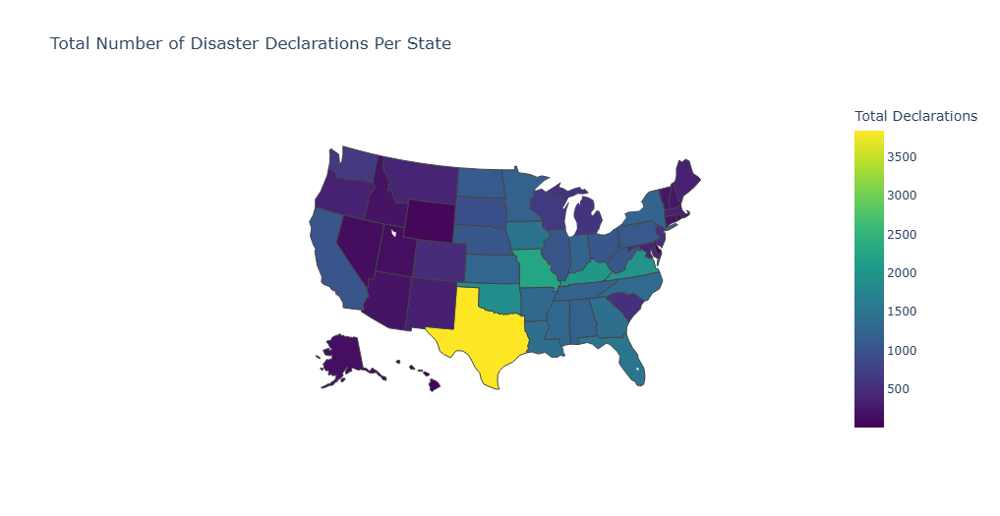

// Federal Emergency Management Agency — 1953 – 2013
United States Natural Disasters Declarations
A comprehensive visual analysis of 46,185 FEMA disaster declarations spanning six decades of American natural and human-caused catastrophes across all 50 states.
46,185Total Declarations
74 yrsTime Span
20Disaster Types
56States / Territories
SCROLL
// SECTION 01
Data Cleaning & Exploratory Analysis
Before analysis, the raw dataset was inspected for structural integrity, missing values, and type consistency. Below is a summary of the data profile and primary distribution of disaster declarations per year.
Metric
Value
Type
Note
Total Records
46,185
Integer
Clean
Total Columns
14
Mixed
OK
Date Range
1953–2017
Date
64 years
Unique States
56
String
Incl. territories
Missing: County
197
Object
0.43% — Minor
Missing: End Date
342
Date
0.74%
Missing: Close Date
10,975
Date
23.8% — Significant
Program Columns
4
Yes/No String
Binarized
// Missing Value Profile — All Columns
Column
Missing Count
% Missing
Status
Missingness Scale
// Total Disaster Declarations per Year (1953 – 2017)
// Disaster Type Frequency Distribution
// SECTION 02
Temporal Trends & Patterns
How disaster declarations have evolved over time — from the quiet 1950s to the catastrophic 2000s spike driven by major hurricanes and flooding events. The stacked area chart reveals shifting dominance among disaster types by decade.
// Annual Declaration Count with 3-Year Rolling Average
// Monthly Seasonality — Declarations by Month
// Disaster Mix by Decade — Radar Comparison
// Stacked Decade Share — Top Disaster Types
// SECTION 03
Geographical Patterns
State-level analysis reveals stark regional disparities — Texas leads all states with 3,842 declarations. Toggle between disaster categories to explore how risk is distributed across the continental US.
// Total Declarations by State — Choropleth Heat Map
// Interactive Disaster Analysis Visualization

// Top 15 States — Hurricane Declarations
// Top 15 States — Wildfire Declarations
// Top 20 States — Total Disaster Declarations
// SECTION 04
Incident Type Analysis
Deep-dive into how different disaster types interact with geography, assistance programs, and declaration patterns. The treemap shows proportional volume; the stacked bar shows state-level type composition; and the radar reveals program approval disparities.
// Incident Type — Proportional Treemap
// Top 10 States — Stacked Bar by Incident Type
// Assistance Program Approval Rates by Incident Type (%)